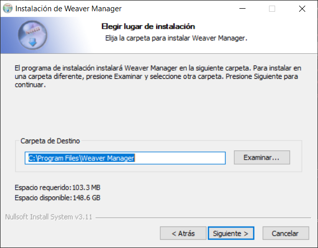
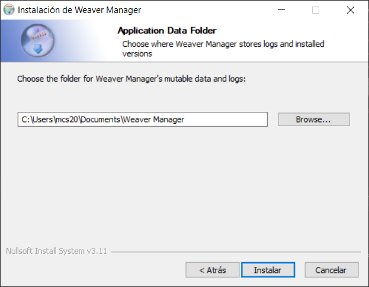
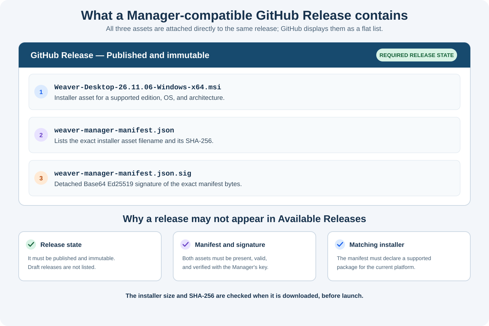
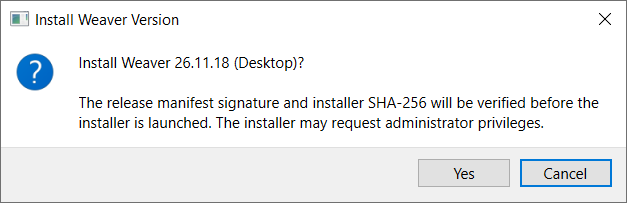
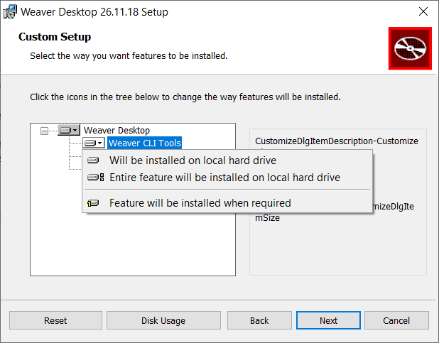
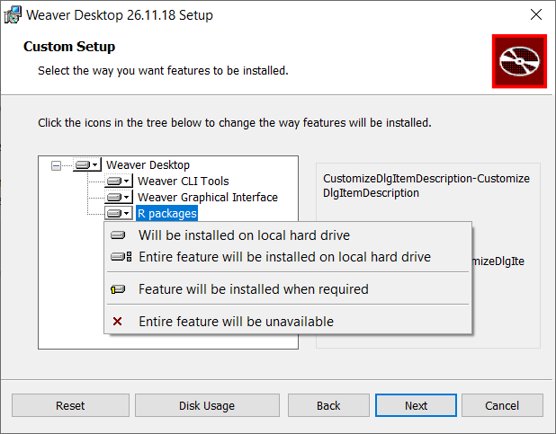
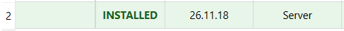

Getting Started#
Install Weaver Manager#
Download the Manager package for your operating system from the Weaver Manager releases page and install it using the standard procedure for that platform. This page filters releases by manager; select the most recent result for Weaver Manager. The repository’s latest release may belong to Weaver, not the Manager.
The Windows installer guides you through the following phases.
Phase 1 — Windows Defender SmartScreen
The installer is not yet digitally signed, so Windows cannot verify its publisher and may display the Windows protected your PC warning. Continue only if you downloaded the installer from the official Weaver Manager releases page. Select More info (also shown as More information in some Windows versions), then Run anyway. Otherwise, cancel the installer.

Windows Defender SmartScreen warning. Select More info to reveal Run anyway.#
Phase 2 — Administrator permission and welcome
Windows asks for permission to let the installer make changes to the device. Accept the prompt to continue. The installer then opens its welcome page; select Next to proceed.
Phase 3 — Software license
Review and accept the software license agreement, then select Next.

License agreement page. Review and accept the terms to continue.#
Phase 4 — Program installation folder
The default program folder is C:\Program Files\Weaver Manager. Keep this location or choose another, then continue.


Program installation folder page with the default path C:\Program Files\Weaver Manager.#
Phase 5 — Start Menu shortcut
Choose the Start Menu folder for the program shortcut, then continue.

Program shortcut selection page.#
Phase 6 — Application data folder
Choose where Weaver Manager should store its mutable data, installed Weaver versions, and logs. The default is Documents\Weaver Manager. Keep this location or choose another folder, then continue. Optionally select Create a desktop shortcut for all users; it is unchecked by default. The choice is remembered on updates, and the shortcut is removed on uninstall.


Application data folder page with the suggested Documents\Weaver Manager location.#
Phase 7 — Install and finish
Select Install and wait for setup to complete. When the completion page appears, select Finish to close the installer.

Installer completion page. Select Finish to close setup.#
Find a release#
Open the Available Releases tab. Each time Weaver Manager starts, it automatically refreshes the list of available releases from GitHub. It displays only entries that have a valid signed manifest, a matching artifact, and a package for the current platform. Select Refresh GitHub Releases to check again while the program is open.
Use Show pre-releases to show or hide pre-release rows. This preference is remembered and is enabled by default. It does not change the discovery cache or notification preferences, and local test installers remain visible.
The GitHub tag column shows each release’s tag, including any pre-release identifier such as -rc.1, so releases with the same version and edition can be distinguished. Releases without a tag are omitted. Local test installers have no GitHub tag. The Version column retains the version from the installer filename; installed status is still determined by that version and edition, not the GitHub tag.
Select a column heading to sort the list. The arrow in the heading shows the current sort direction; select the same heading again to reverse it.

The Edition column is sorted in ascending order. Select the same column heading again to reverse the order.#
The Release status column identifies Latest, Stable, or Pre-Release.
Latest: the most recent stable release identified by GitHub. Weaver Manager does not install it automatically.
Stable: a regular release that is not marked as a pre-release; a newer stable release may be available.
Pre-Release: a release marked by its maintainers as preliminary, usually for testing or evaluation.
Cache status tracks releases the Manager has discovered and versions it detects as installed. It identifies each verified entry for the current platform by its GitHub tag, version and edition, so different tags with the same version and edition are tracked independently. This record is separate from the temporary cache used for downloaded installer files. Earlier ID-based or version-and-edition cache entries are migrated when the release catalog is next loaded. The older version-and-edition cache cannot distinguish tags, so matching releases in that first catalog are treated as already seen.
When the Manager searches for releases for the first time, this record is empty, so every verified release it finds for the current platform that is not already detected as installed is marked NEW. On later searches, NEW marks releases discovered since the previous search. If Weaver release notifications are enabled, an information window lists newly discovered versions and editions, including pre-releases only if their notification option is enabled. The NEW marker is informational; it is not a recommendation or security rating, and it clears after the next refresh or when the Manager restarts.

Information window listing the newly discovered version and edition pairs.#
When the Manager detects that a version and edition are installed, Cache status changes to INSTALLED and its Install button is hidden to prevent installing it again. After uninstalling it, select Refresh Installed Versions; if its release is still available in the catalog, it can be installed again.
Why a release may not appear#
GitHub Release assets are attached as a flat list, not uploaded into folders. Weaver Manager lists only published, immutable releases that include both weaver-manager-manifest.json and its detached Base64 Ed25519 signature, weaver-manager-manifest.json.sig, as well as a supported installer asset. Draft releases, missing files, invalid signatures, malformed manifests, and assets that do not match the current platform are omitted.
The Manager verifies the manifest using a public key pinned into the application at build time. The signed manifest must declare the installer asset and its SHA-256. The installer filename must identify a supported edition, version, operating system, and architecture, and must match the current platform.
Supported installer names follow this pattern:
Weaver-<Edition>-<YY.MM.DD>-<OS>-<Architecture>.<extension>
For example: Weaver-Desktop-26.11.06-Windows-x64.msi. The edition is Desktop or Server; OS is Windows, Linux, or macOS; architecture is currently x64 or arm64. Supported extensions are msi on Windows, deb or rpm on Linux, and pkg or dmg on macOS.


Example of the assets attached to a Manager-compatible GitHub Release and the catalog requirements.#
Before launching an installer, the Manager checks the downloaded file’s size and SHA-256 against the signed manifest and verifies the cached file again.
Warning
These checks protect the catalog and installer download from unauthorized or accidental changes relative to the signing key. They do not replace operating-system security controls or independent review of a release.
See Publishing a Weaver Release for the release preparation checklist. If this explanation does not identify why a release is missing, see Troubleshooting for other possible causes and their solutions.
Install a version#
The verified releases for your operating system and architecture are shown in a table. Compare the Version and Edition columns to find the build you want. The Installer column shows the package that will be launched; other columns provide publication date, release status, and cache status.
Select Install in the row for the chosen version and edition.

Select the intended version and edition, then click Install in that row.#
Weaver Manager opens a confirmation dialog showing the selected version and edition. It explains that the release manifest signature and installer SHA-256 will be verified before the installer is launched, and that the installer may request administrator privileges. Select Yes to continue or Cancel to stop.


Confirm the selected version after reviewing the verification and administrator-privilege notice.#
The Manager validates release manifest signatures when it loads the catalog. After you confirm, it downloads the installer and checks its size and SHA-256 against the signed manifest. If the checks pass, the Manager launches the downloaded installer automatically. Follow the instructions for your operating system in the relevant tab.
After verification, Weaver Manager opens the downloaded Windows installer automatically. When started this way, the MSI runs in Manager-managed mode and skips the standard folder-selection pages. The Manager installs the version in an installed_versions subdirectory under each of its configured locations: the software installation directory and the mutable-data directory. These predetermined locations let Weaver Manager keep track of the installed versions and their content. You do not need to choose either path in the version installer. This differs from launching the MSI directly.
Welcome
The version installer opens at its welcome screen. Select Next to continue.

The version installer opens automatically after verification. Select Next to continue.#
Accept the license
Review the license agreement, select the option to accept its terms, and continue to the next page.

Accept the license agreement to continue with the installation.#
Choose components
The component list depends on whether you selected the Desktop or Server edition. All components are selected by default. Select a feature’s icon in the tree to open its installation-state menu. Required components cannot be excluded; optional components can also be excluded or added when modifying the installation.

Component choices vary by edition; all components are selected by default.#
Required components
Required components have an installation-state menu, but it does not include an option to exclude the component. Use one of the available installation options:


Installation options for a required component. This menu does not include an option to exclude the component.#
Will be installed on local hard drive — installs the component locally; its subcomponents can be selected separately.
Entire feature will be installed on local hard drive — installs the component and all its subcomponents locally.
Feature will be installed when required — makes the component available for installation when it is first needed.
Optional components
Optional components have the same installation options, plus an option to leave the component out of the installation. Choose Entire feature will be unavailable to prevent the component and its subcomponents from being installed. To add or retain the component, choose one of the installation options described above.


Installation options for an optional component, including Entire feature will be unavailable.#
Repeat this for each component you want to change, then continue with the installation.
Install
On the ready-to-install page, select Install to begin. Windows may then ask for permission to make changes to your device. Accept the User Account Control prompt to allow the installation to continue.
Warning
Installation time depends on the selected components and may range from a few seconds to several minutes. Wait for the installer to finish and do not close or interrupt it.
Finish
When installation is complete, the installer displays its completion page. Select Finish to close it.

The completion page confirms that the installation has finished.#
The Manager does not install silently or update an existing version in place; versions can be installed side by side. After installation, the version is added automatically to Installed Versions, and its Cache status in Available Releases changes to INSTALLED.


The installed version is marked INSTALLED in the Cache status column.#
For details about the actions available for an installed version, see Managing Installed Versions.
For instructions on adding and installing a local test installer, see Local test installers.
Logs and installer cache#
Weaver Manager stores its logs and data in the application data folder selected during installation. By default, this is Documents\Weaver Manager. The folder can be in a different location if you selected one in the installer.
Logs are stored in the logs subfolder:
weaver-manager.logrecords Manager activity and installer process output. It is appended to across Manager sessions.On Windows,
msiexec-install.logrecords a managed version installation, andmsiexec-modify.logrecords a Modify operation. These are verbose Windows Installer logs and can help diagnose installation or maintenance failures.
Release, notification and theme state is stored separately in release-cache.ini in the platform’s per-user application data folder. It records which Weaver version-and-edition pairs have already appeared in the release catalog, along with the theme choice, Manager update-notification preferences and dismissed notifications. This lets the Manager identify newly discovered releases and remember your preferences. It is not a cache of the GitHub release catalog or its manifests. Removing this file resets the theme and notification preferences to their defaults; on systems with legacy saved release history, the Manager may restore that history from its older settings store.
Verified installers are downloaded to verified-installers in the platform’s cache folder. Before launching an installer, Weaver Manager checks its size and SHA-256 against the signed release manifest and verifies the cached file again. A catalog refresh removes cached installers for releases that are no longer available for the current platform. The Manager also removes the installer cache when it closes; if an installer is still running, the Manager waits until it finishes before closing and cleaning up the cache.
The installed_versions folders contain the actual Weaver installations, not temporary cache files. Closing Weaver Manager does not remove installed versions.